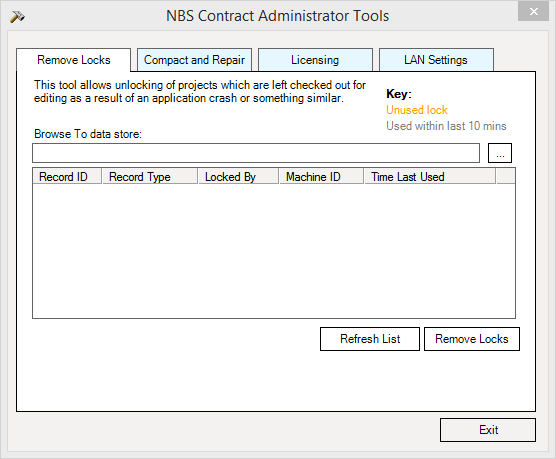

Tool: Removing Locks |
The Remove Project Locks tool allows the unlocking of projects which are left checked out for editing as a result of an application crash or similar problem. This tool is external to the main software and can be opened by browsing to the shortcut in the Start Menu.
From the Windows Start Menu select All Programs > NBS > NBS Tools > NBS Contract Administrator Tools. Alternatively search for NBS Contract Administrator Tools.

The default datastore should be selected, however it is possible to browse to the selected datastore using the Browse button. Information of any locked Jobs in the datastore will appear in the table. To refresh this table click on the Refresh List button.
Select the Job in the list and click the Remove Locks button to unlock it. The Job will now be unlocked and accessable for editing within NBS Contract Adminstrator.
See also:
Tools - Compact and Repair
Tools - Licence Viewer
Tools - LAN Settings